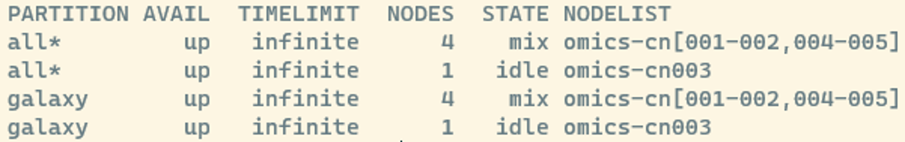
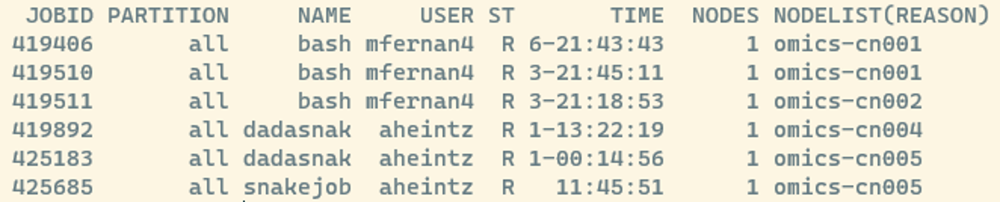
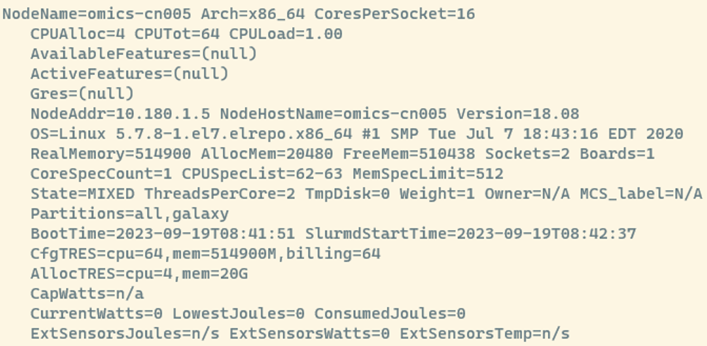
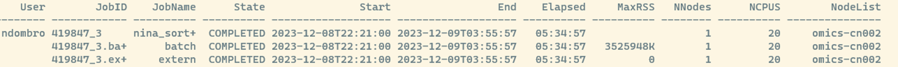

sinfoWorking on a cluster
Next, let’s go over some basic commands that are useful when working on an HPC.
Generally, you schedule jobs on an HPC for them to run effectively. The scheduler used on Crunchomics is called slurm and allows you to:
- allocate resources on compute nodes
- helps you start, run, and keep track of work on the assigned node
- handles conflicts for resources by keeping track of a waiting list for pending work
Important
Since you share resources with other people when using an HPC:
Choose the resources you use wisely and allow other users to also run some work. For big projects on the Uva Crunchomics HPC you are encouraged to contact Wim de Leeuw w.c.deleeuw@uva.nl beforehand.
Slurm basics
Get information about the cluster
By typing the following command into the cli:
We will see something like this:

Here, you see information about the:
- partition: the queues that are available
- state:
- mix : consumable resources partially allocated
- idle : available to requests consumable resources
- drain : unavailable for use per system administrator request
- alloc : consumable resources fully allocated
- down : unavailable for use.
- Nodes: The number of nodes
- NodeList: the names of the nodes omics-cn001 to omics-cn005
View info about jobs in the queue
The following commands gives us some information about how busy the HPC is:
squeueAfter running this, you can see all jobs scheduled on the HPC:

- JOBID: every job gets a number and you can manipulate jobs via this number
- ST: Job state codes that describe the current state of the job. The full list of abbreviations can be found here
Unsure about the resources each node has?
If you are unsure about how many resources a compute node has available you can get more information using the followign command:
scontrol show node
This is a lot of information but here are some useful things to look at:
- NodeName=omics-cn005: This is the name of the node you’re inspecting. Each node has a unique name for identification.
- CPUAlloc=4 CPUTot=64 CPULoad=1.00:
- CPUAlloc=4: Currently, 4 CPUs are allocated or actively being used.
- CPUTot=64: The total number of CPUs available on this node is 64.
- CPULoad=1.00: The CPU load gives you an idea of how busy the CPUs are. A load of 1.00 means they’re fully utilized.
- RealMemory=514900 AllocMem=20480 FreeMem=510438:
- RealMemory=514900: The total physical memory (RAM) on this node is 514900 megabytes or 512 Gb.
- AllocMem=20480: Currently, 20 gigabytes of memory are allocated or in use.
- FreeMem=510438: There are 510438 megabytes of free memory available.
- AllocTRES=cpu=4,mem=20G:
- AllocTRES shows the resources currently allocated. 4 CPUs and 20 gigabytes of memory are currently in use.
If unsure about what resources are available:
- Check CPUTot for the total CPUs on the node
- Look at CPUAlloc for the currently allocated CPUs.
- Examine RealMemory for total available memory and FreeMem for the unused portion.
Get information about running jobs
To get a better feel about how many resources a job used we can use sacct, which displays accounting data for all jobs and job steps in the Slurm job accounting log or Slurm database.
In the command below 419847 is the job ID of a currently running or finished job and -with --format we create a custom repport with some useful information:
sacct -j 419847 --format=User,JobID,Jobname,state,start,end,elapsed,MaxRss,nnodes,ncpus,nodelist
This tells us:
- In the example the first row corresponds to the job itself and the other rows are job steps. If you run things in parallel you will get several additional rows and can see how many resources each job used
- How long the job run (or each job for parallel jobs)
- MaxRSS: the highest amount of memory your job used while it was running in kilobytes. In our example we see the job used 3525948 kilobytes or 3.5 Gigabytes.
Submitting a job
srun
srun isused when you want to run tasks interactively or have more control over the execution. You directly issue srun commands in the terminal, specifying the tasks to be executed and their resource requirements.
Use srun when:
- You want to run tasks interactively and need immediate feedback.
- You are testing or debugging your commands before incorporating them into a script.
- You need more control over the execution of tasks.
A simple example:
srun echo "Hello interactively"Assuming you want to run a more complex interactive task with srun it is good to specify the resources your job needs by adding flags, i.e.
srun --nodes=1 --ntasks=1 --cpus-per-task=4 --mem=4G echo "Hello interactively"--nodes=1: Specifies the number of nodes. In this case, it’s set to 1.--ntasks=1: Defines the number of tasks to run. Here, it’s set to--cpus-per-task=4: Specifies the number of CPUs per task. Adjust this based on the computational requirements of your task.--mem=4G: Sets the memory requirement for the task. Modify this based on your task’s memory needs.echo "Hello interactively!: The actual command you want to run interactively.
sbatch
sbatch is your go-to command when you have a script (a batch script) that needs to be executed without direct user interaction.
Use sbatch when:
- You have long-running or resource-intensive tasks.
- You want to submit jobs that can run independently without your immediate supervision
- You want to submit multiple jobs at once
To run a job script, you:
- create a script that contains all the commands and configurations needed for your job
- use sbatch to submit this script to the Slurm scheduler, and it takes care of the rest.
To get started, assume we have created a script named first_batch_script.sh with the following content in which we want to run two commands after each other:
#!/bin/bash
#SBATCH --nodes=1
#SBATCH --ntasks=1
#SBATCH --cpus-per-task=2
#SBATCH --mem=2G
# Job Step 1
echo "Hello from your extended batch script"
# Job Step 2
echo "Today we are using slurm"The we can submit first_batch_script.sh with:
sbatch first_batch_script.shAfter running this, you will see that a new file is generated that will look something like this slurm-425707.out. When you submit a batch job using sbatch, Slurm redirects the standard output and standard error streams of your job to a file named in the format slurm-JOBID.out, where JOBID is the unique identifier assigned to your job.
This file is useful as it:
- Captures the output of our batch scripts and stores them in a file
- Can be used for debugging, since if something goes wrong with your job, examining the contents of this file can provide valuable insights into the issue. Error messages, warnings, or unexpected outputs are often recorded here.
Running things in parallel
In bioinformatics its very common to run the same command on several input files. Instead of copy pasting the same command several times, we can write the command once and use a slurm array to run the command in parallel on the same files.
Assume we have three files with sequencing data, one for each sample:
- sample1.fastq.gz
- sample2.fastq.gz
- sample3.fastq.gz
We might want to do some cleaning of the reads, for example remove adaptors from all three files. We start with making a file that list all samples we want to work with (i.e. using nano or cp from excel) called sample_list which might look like this:
sample1
sample2
sample3We then can write a sbatch script, i.e. arrays.sh, as follows:
#!/bin/bash
#SBATCH --job-name=our_job
#SBATCH --output=%A_%a.out
#SBATCH --error=%A_%a.err
#SBATCH --array=1-3%2
#SBATCH --cpus-per-task=20
#SBATCH --mem-per-cpu=5G
#SBATCH --mail-type=END,FAIL
#SBATCH --mail-user=user@uva.nl
#calculate the index of the current job within the batch
INDEX=$((SLURM_ARRAY_TASK_ID ))
#build array structure via ale file names
CURRENT_SAMPLE=$(cat sample_list | sort -V | sed -n "${INDEX}p")
echo "Now Job${INDEX} runs on ${CURRENT_SAMPLE}"
porechop --input ${CURRENT_SAMPLE}.fastq.gz \
--output outputfolder/${CURRENT_SAMPLE}_filtered.fastq.gz \
--threads 20 \
--discard_middleThe first section contains parameters for Slurm, the job scheduler.
--job-name:Specifies the name of the job.--outputand--error: Define the naming pattern for the standard output and error files.%Arepresents the job ID assigned by Slurm, and%arepresents the array task ID, which is the index of the current job within the array. After running the job, you will get files that might be named 123456_1.out or 123456_1.err, where 123456 is the job ID and 1 is the array task ID.--array: Sets up a job array, specifying the range (1-3) and stride (%2) for the array. It says that we want to run 3 jobs and two jobs should be run at the same time--cpus-per-task: Indicates the number of CPU cores each task in the array will use--mem-per-cpu: Specifies the memory requirement per CPU core.--mail-typeand--mail-user: Configure email notifications for job completion or failure.
The job does the following:
- The INDEX variable is calculated using the SLURM_ARRAY_TASK_ID, representing the index of the current job within the array. In our case this will be first 1, then 2 and finally 3.
- Next, we build the array structure. The CURRENT_SAMPLE variable is created by reading the sample_list file, sorting it using sort -V (version sorting), and extracting the sample at the calculated index using sed. So for the first index we extract sample1 and store it in the variable CURRENT_SAMPLE.
- The porechop command is executed using the CURRENT_SAMPLE variable, processing the corresponding FASTQ file. So for the first array, it will trim adapters from sample1.fastq.gz